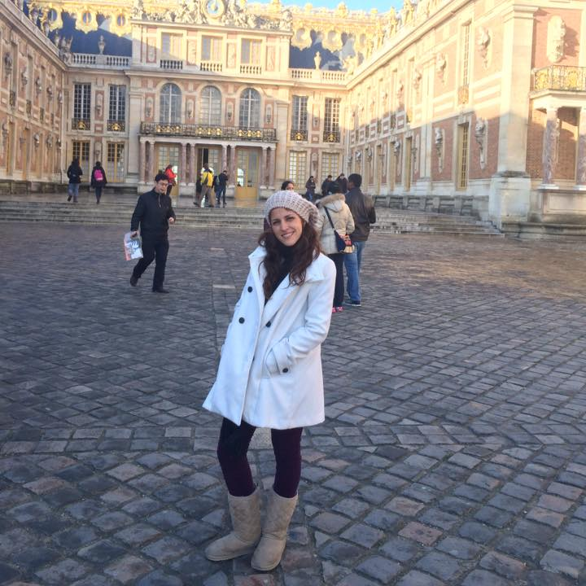

About Me
Have you ever thought you could be a great web developer?
My name is Ma Fernanda and this is my story: I was born in a big city called Guadalajara. When I turned 18 I decided to go out and see the world, so I landed up in Switzerland. After a year, I came back to México to live in Puebla and study Finance Administration. Since I have always been eager for new experiences, I went to live to Melbourne in Australia.
After I graduated, I started working at Santander in Mid Corp Banking. I am the Director for Treasury Instruments, where I am mainly focused in hedging instruments for foreing exchange and interest rates. Whilst working at the Bank I studied a Masters Degree in Banking and Finance at Instituto de Estudios Bursátiles de Madrid. After finishing and climbing up at my job I thought, why not give my career a boost and complement it with something different? And that is what got me into coding.
WHAT MOVES ME
- I love to learn new and different abilities
- Keep moving forward with new challenges
- Family: the beginning and center of life
EDUCATION
- Degree in Finance Administration at Tecnológico de Monterrey
- Masters Degree in Banking and Finance at Instituto de Estudios Bursátiles de Madrid
- Diplomat in Hedging Structures at Tecnológico de Monterrey